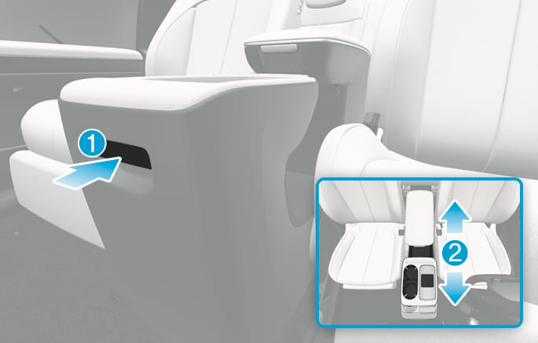

슬라이딩 콘솔

2C_SlidingArmrest
레버(1)를 누르고 앞/뒤(2)로 힘을 주어 밀거나 당기면 콘솔박스를 이동시킬 수 있습니다.
슬라이딩 타입의 중앙 콘솔 박스를 이동 시킨 뒤, 콘솔박스가 '딸깍' 하며 고정되는 소리가 나는지 확인하십시오.
슬라이딩 타입의 중앙 콘솔 박스를 과도한 힘으로 이동시키면 콘솔박스 레일 또는 레버가 손상될 수 있습니다.
차가 움직이는 동안에는 슬라이딩 콘솔을 움직이지 마십시오. 급정차나 충돌 시 위험할 수 있습니다.